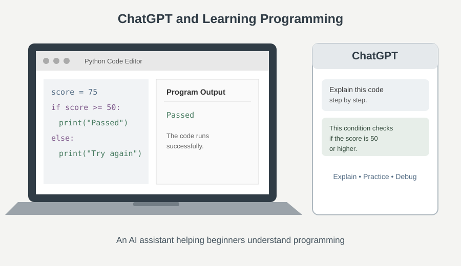

اسم الطالبة: مريم عماد عياد عبد المسيح
الرقم الجامعي: 2500507

أصبح الذكاء الاصطناعي من التقنيات المؤثرة في مجالات الحياة المختلفة، ومن بينها التعليم وتطوير البرمجيات. فبعد أن كان تعلم البرمجة يعتمد بدرجة كبيرة على الكتب والمحاضرات والبحث في المنتديات، أصبح بإمكان المتعلم أن يتفاعل مع أدوات ذكية مثل ChatGPT، ويطرح عليها أسئلة باللغة العربية أو الإنجليزية، ويحصل على شرح وأمثلة تساعده على فهم المفاهيم البرمجية.
وتُعد بداية تعلم البرمجة مرحلة مليئة بالتحديات؛ إذ يواجه المبتدئ مصطلحات جديدة مثل المتغيرات، والشروط، والحلقات التكرارية، والدوال، كما قد يجد صعوبة في فهم رسائل الخطأ أو متابعة طريقة تنفيذ البرنامج خطوة بخطوة. وهنا يمكن لـChatGPT أن يعمل كمساعد تعليمي يشرح الفكرة بأكثر من طريقة، ويبسط الأكواد، ويقترح تدريبات مناسبة لمستوى المتعلم.
ولا يعني ذلك أن الذكاء الاصطناعي بديل عن المعلم أو عن الممارسة الشخصية؛ فالتعلم الحقيقي يتطلب كتابة الكود وتشغيله، واكتشاف الأخطاء، والتأكد من صحة الإجابات. لذلك يناقش هذا البحث مفهوم استخدام ChatGPT في تعلم البرمجة، وأهم طرق الاستفادة منه، مع توضيح مثال عملي وفوائده وحدوده وضوابط الاستخدام المسؤول.
أهداف البحث: توضيح دور ChatGPT في تبسيط الأكواد، وبيان كيفية استخدامه في حل المشكلات البرمجية، والتعرف إلى مزاياه ومخاطره، ثم تقديم إرشادات تساعد المبتدئ على التعلم بصورة فعالة.
الذكاء الاصطناعي مجال تقني يهدف إلى بناء أنظمة تستطيع تنفيذ مهام ترتبط عادةً بقدرات بشرية، مثل فهم اللغة، والتعرف إلى الأنماط، وتوليد النصوص، والمساعدة في حل المشكلات. ومن تطبيقاته نماذج اللغة الكبيرة التي تتعامل مع الأسئلة والتعليمات المكتوبة وتنتج إجابات بناءً على الأنماط التي تعلمتها أثناء التدريب.
يُعد ChatGPT واجهة حوارية يمكن للمستخدم من خلالها طلب شرح موضوع أو مراجعة نص أو فهم جزء من كود برمجي. وفي مجال البرمجة، يستطيع المستخدم لصق مقطع كود ثم طلب شرح وظيفة كل سطر، أو معرفة سبب ظهور رسالة خطأ، أو اقتراح طريقة أبسط لكتابة الحل. وتكمن أهميته للمبتدئ في إمكانية متابعة الحوار وطرح أسئلة إضافية كلما ظهرت نقطة غير واضحة.
قد يبدو الكود في البداية مجموعة من الرموز الغامضة. يستطيع المتعلم أن يطلب شرح وظيفة كل سطر، ومعنى الكلمات المستخدمة، وما الذي سيظهر عند تشغيل البرنامج. هذا النوع من الشرح يربط بين شكل التعليمة ونتيجتها.
يمكن طلب شرح المتغيرات باعتبارها أماكن لتخزين البيانات، أو شرح الشرط باعتباره قرارًا يعتمد على تحقق حالة معينة. كما يمكن طلب تشبيه من الحياة اليومية، ثم الانتقال تدريجيًا إلى المصطلحات العلمية الدقيقة.
بدلًا من الانتقال مباشرة إلى مشروع معقد، يمكن أن يطلب المبتدئ مثالًا بسيطًا، ثم مثالًا أكثر تقدمًا، ثم تمرينًا يحله بنفسه. ويساعد التدرج على بناء الفهم خطوة بخطوة بدلًا من حفظ كود طويل دون إدراك طريقة عمله.
يمكن أن يطلب المتعلم توضيح الفرق بين طريقتين لكتابة البرنامج، وبيان مزايا كل طريقة من حيث الوضوح وسهولة الصيانة والأداء. وينبغي أن تكون المقارنة مناسبة لمستوى المتعلم، وألا يركز فقط على الوصول إلى النتيجة النهائية.
الأخطاء جزء طبيعي من تعلم البرمجة، وقد تكون ناتجة عن كتابة اسم متغير بصورة غير صحيحة، أو نسيان علامة ترقيم، أو استخدام نوع بيانات غير مناسب، أو وجود خطأ في منطق الحل. يستطيع ChatGPT مساعدة المبتدئ على قراءة رسالة الخطأ وتحديد الأسباب المحتملة، ثم اقتراح خطوات لاختبار كل سبب. ومع ذلك، يظل تشغيل البرنامج ومراجعة النتيجة ضروريين للتأكد من أن التصحيح صحيح.
من الأفضل أن يرسل المتعلم رسالة الخطأ كاملة، والجزء المرتبط بها من الكود، وما كان يتوقع حدوثه، وما حدث بالفعل. فكلما كان السؤال واضحًا ومحددًا، أصبح من الأسهل الحصول على إجابة مفيدة. ويجب حذف كلمات المرور ومفاتيح الوصول وأي بيانات شخصية أو سرية قبل مشاركة الكود مع أي خدمة عبر الإنترنت.
لنفترض أن المبتدئ يريد كتابة برنامج يحدد ما إذا كانت درجة الطالب ناجحة أم لا. يمكن استخدام المثال التالي:
درجة = 75
if درجة >= 50:
print("ناجح")
else:
print("يحتاج إلى تحسين")فكرة البرنامج هي تخزين الدرجة في متغير، ثم اختبار ما إذا كانت تساوي 50 أو تزيد عليها. إذا تحقق الشرط، يطبع البرنامج كلمة «ناجح»، وإذا لم يتحقق يطبع رسالة أخرى. في لغة Python تُستخدم المسافات البادئة لتحديد الأوامر التابعة للشرط، ولذلك يجب كتابتها بصورة صحيحة.
يمكن للمبتدئ أن يطلب من ChatGPT تغيير الدرجة إلى 40، ثم يتوقع النتيجة قبل تشغيل البرنامج. وبعد ذلك يمكنه تجربة الدرجة 50 والدرجة 100، وشرح سبب ظهور كل نتيجة. ويمكنه أيضًا طلب تمرين مشابه دون إظهار الحل مباشرة، ثم مقارنة محاولته بالحل المقترح.
يستطيع المتعلم استخدام ChatGPT كمدرب يساعده على تنظيم تعلمه، من خلال طلب تدريبات مناسبة لمستواه، والحصول على تلميحات عند مواجهة مشكلة، وطلب أمثلة متدرجة بدلًا من الحل النهائي مباشرة. كما يمكنه أن يطلب أسئلة للمراجعة ثم يحاول الإجابة عنها بنفسه، وبذلك يصبح الحوار وسيلة للتدريب والفهم وليس مجرد الحصول على كود جاهز.
من أبرز الفوائد إتاحة شرح فوري عند ظهور سؤال، وتقديم أمثلة متعددة، وإمكانية إعادة الشرح بصياغة أبسط أو بلغة مختلفة. كما قد يساعد على تقليل شعور المبتدئ بالإحباط عندما يواجه خطأ، ويوفر نقطة بداية لاستكشاف موضوع جديد. ويمكن أن يكون مفيدًا كذلك في مراجعة المفاهيم، وصناعة أسئلة تدريبية، وتوليد أفكار لمشروعات صغيرة تناسب مستوى المتعلم.
ومن الفوائد أيضًا أن المتعلم يستطيع التحكم في طريقة الشرح؛ فيطلب جدولًا للمقارنة، أو مثالًا واقعيًا، أو تمرينًا تدريجيًا. وهذا يمنحه فرصة للتعلم وفق احتياجاته، لكنه يحتاج إلى تنظيم وقواعد واضحة حتى لا تتحول السرعة إلى اعتماد كامل على الإجابات الجاهزة.
| الاستخدام | كيف يساعد المبتدئ؟ |
|---|---|
| شرح الأكواد | توضيح وظيفة كل سطر ومعنى التعليمات البرمجية. |
| تبسيط المفاهيم | شرح المتغيرات والشروط والدوال بأمثلة سهلة. |
| اكتشاف الأخطاء | المساعدة في فهم رسائل الخطأ واقتراح طرق للتصحيح. |
| التدريب | تقديم تمارين وأسئلة تناسب مستوى المتعلم. |
| مقارنة الحلول | توضيح الاختلاف بين طرق كتابة البرنامج. |
على الرغم من الفوائد السابقة، فإن ChatGPT قد يقدم أحيانًا معلومات غير دقيقة أو كودًا لا يعمل في البيئة المستخدمة، وقد يغفل تفاصيل تتعلق بإصدار اللغة أو المكتبات أو متطلبات المشروع. كما قد ينتج حلًا يبدو صحيحًا لكنه لا يعالج جميع الحالات. لذلك لا ينبغي اعتبار كل إجابة حقيقة مؤكدة، بل يجب مراجعتها وتشغيل الكود واختباره على أمثلة مختلفة.
ومن التحديات أن الاعتماد المفرط على نسخ الحلول قد يمنع الطالب من تطوير التفكير المنطقي ومهارة تصحيح الأخطاء. وإذا استخدم المتعلم الأداة لإنجاز الواجب بالكامل دون فهم، فقد يحصل على نتيجة قصيرة المدى لكنه يخسر فرصة التدريب. والأفضل طلب التلميحات والتفسير، ثم كتابة الحل بصورة مستقلة.
كذلك يجب الانتباه إلى الخصوصية؛ فلا ينبغي إدخال بيانات شخصية أو كلمات مرور أو شيفرات عمل سرية. وتؤكد إرشادات اليونسكو بشأن الذكاء الاصطناعي التوليدي في التعليم والبحث أهمية حماية البيانات، والتحقق من ملاءمة الاستخدام تربويًا وأخلاقيًا، والحفاظ على دور الإنسان في عملية التعلم.
يتضح من هذا البحث أن ChatGPT يمكن أن يكون أداة مساعدة مهمة للمبتدئين في تعلم البرمجة؛ فهو يشرح الأكواد، ويبسط المفاهيم، ويقدم أمثلة وتدريبات، ويساعد على فهم رسائل الخطأ ومقارنة الحلول. وتزداد فائدته عندما يتعامل معه المتعلم بوصفه مساعدًا للحوار والتجربة، لا مصدرًا معصومًا من الخطأ ولا بديلًا عن الممارسة أو المعلم.
وتعتمد الاستفادة الحقيقية على طريقة الاستخدام: ينبغي للمتعلم أن يسأل بوضوح، ويختبر الإجابات، ويكتب الكود بنفسه، ويستخدم المصادر الرسمية للتحقق. كما يجب مراعاة الخصوصية والأمانة الأكاديمية، وعدم تسليم أعمال لا يفهمها. وبذلك يصبح الذكاء الاصطناعي وسيلة لدعم الفهم والتفكير المستقل، وليس مجرد وسيلة للحصول على إجابات سريعة.